Voice-Controlled Teleprompter
Téléprompteur à Commande Vocale
Teleponto Controlado por Voz
Teleprompter Controlado por Voz
Last updated: September 15, 2026
TakeMate Teleprompter ("the App") is a native Android application that follows your voice and scrolls your script for you, or lets you scroll it manually at your own pace. This Privacy Policy explains how the App handles user data.
The App does not collect, store, or sell any personal data.
The App requests the RECORD_AUDIO permission solely to power its voice-follow mode, tracking which word you're on as you read. Audio captured through the microphone is:
You can revoke microphone access at any time via Android Settings → Apps → TakeMate Teleprompter → Permissions. Voice mode will not function without it; the App's manual Scroll mode does not require microphone access at all.
Scripts you write or import are stored only in a local database on your device. They are never uploaded anywhere by the App. If you use the App's own Share feature, that's a deliberate action you take — the App hands the text to whatever app you choose, the same way any "Share" button on Android works. Deleting a script, or uninstalling the App, removes it from your device for good.
The App does not send your data to the internet. The only network use is the speech recognition described above, handled by your device's speech recognition service. App updates are delivered exclusively through Google Play.
The App does not knowingly collect any information from anyone, including children under 13, because it does not collect personal information from anyone at all.
If this Privacy Policy is updated, the "Last updated" date above will change. Continued use of the App after changes constitutes acceptance of the updated policy.
Questions about this Privacy Policy can be sent to: info@alexsousa.eu
Dernière mise à jour : 15 septembre 2026
TakeMate Teleprompter (« l'App ») est une application Android native qui suit votre voix et fait défiler votre texte pour vous, ou vous laisse le faire défiler manuellement à votre propre rythme. Cette Politique de Confidentialité explique comment l'App traite les données des utilisateurs.
L'App ne collecte, ne stocke ni ne vend aucune donnée personnelle.
L'App demande l'autorisation RECORD_AUDIO uniquement pour activer son mode de suivi vocal, qui repère où vous en êtes dans le texte pendant que vous lisez. L'audio capté par le microphone est :
Vous pouvez révoquer l'accès au microphone à tout moment via Paramètres Android → Applications → TakeMate Teleprompter → Autorisations. Le mode vocal ne fonctionnera pas sans cette autorisation ; le mode défilement manuel de l'App ne nécessite aucun accès au microphone.
Les textes que vous écrivez ou importez sont stockés uniquement dans une base de données locale sur votre appareil. Ils ne sont jamais téléversés par l'App. Si vous utilisez la fonction de partage de l'App, il s'agit d'une action délibérée de votre part — l'App transmet le texte à l'application de votre choix, comme n'importe quel bouton « Partager » sur Android. Supprimer un texte, ou désinstaller l'App, le retire définitivement de votre appareil.
L'App n'envoie pas vos données sur Internet. La seule utilisation du réseau est la reconnaissance vocale décrite ci-dessus, gérée par le service de reconnaissance vocale de votre appareil. Les mises à jour de l'App sont distribuées exclusivement via Google Play.
L'App ne collecte sciemment aucune information de qui que ce soit, y compris des enfants de moins de 13 ans, car elle ne collecte aucune information personnelle de personne.
Si cette Politique de Confidentialité est mise à jour, la date de « Dernière mise à jour » ci-dessus sera modifiée. La poursuite de l'utilisation de l'App après ces modifications vaut acceptation de la politique mise à jour.
Pour toute question concernant cette Politique de Confidentialité : info@alexsousa.eu
Última atualização: 15 de setembro de 2026
TakeMate Teleprompter ("a App") é uma aplicação nativa Android que segue a tua voz e faz deslizar o teu texto por ti, ou permite que o faças deslizar manualmente ao teu próprio ritmo. Esta Política de Privacidade explica como a App trata os dados do utilizador.
A App não recolhe, armazena nem vende quaisquer dados pessoais.
A App pede a permissão RECORD_AUDIO exclusivamente para ativar o modo de leitura por voz, que acompanha em que palavra estás enquanto lês. O áudio captado pelo microfone é:
Podes revogar o acesso ao microfone a qualquer momento em Definições do Android → Aplicações → TakeMate Teleprompter → Permissões. O modo de voz não funciona sem esta permissão; o modo de deslocamento manual da App não precisa de acesso ao microfone.
Os textos que escreves ou importas são guardados apenas numa base de dados local no teu dispositivo. Nunca são carregados para lado nenhum pela App. Se usares a funcionalidade de partilha da própria App, essa é uma ação deliberada tua — a App entrega o texto à aplicação que escolheres, tal como qualquer botão "Partilhar" no Android. Apagar um texto, ou desinstalar a App, remove-o definitivamente do teu dispositivo.
A App não envia os teus dados para a Internet. A única utilização da rede é o reconhecimento de voz descrito acima, feito pelo serviço de reconhecimento de voz do teu dispositivo. As atualizações da App são distribuídas exclusivamente pelo Google Play.
A App não recolhe, com conhecimento, informação de ninguém, incluindo crianças menores de 13 anos, porque não recolhe informação pessoal de ninguém.
Se esta Política de Privacidade for atualizada, a data de "Última atualização" acima será alterada. Continuar a usar a App após alterações constitui aceitação da política atualizada.
Questões sobre esta Política de Privacidade podem ser enviadas para: info@alexsousa.eu
Última atualização: 15 de setembro de 2026
TakeMate Teleprompter ("o App") é um aplicativo nativo Android que acompanha sua voz e rola o script para você, ou permite que você role manualmente no seu próprio ritmo. Esta Política de Privacidade explica como o App trata os dados do usuário.
O App não coleta, armazena nem vende nenhum dado pessoal.
O App solicita a permissão RECORD_AUDIO exclusivamente para ativar o modo de leitura por voz, que acompanha em qual palavra você está enquanto lê. O áudio captado pelo microfone é:
Você pode revogar o acesso ao microfone a qualquer momento em Configurações do Android → Apps → TakeMate Teleprompter → Permissões. O modo de voz não funciona sem essa permissão; o modo de rolagem manual do App não precisa de acesso ao microfone.
Os scripts que você escreve ou importa são guardados apenas em um banco de dados local no seu dispositivo. Nunca são enviados para lugar nenhum pelo App. Se você usar o recurso de compartilhamento do próprio App, essa é uma ação deliberada sua — o App entrega o texto ao aplicativo que você escolher, da mesma forma que qualquer botão "Compartilhar" no Android. Excluir um script, ou desinstalar o App, remove-o definitivamente do seu dispositivo.
O App não envia seus dados para a Internet. O único uso da rede é o reconhecimento de voz descrito acima, feito pelo serviço de reconhecimento de voz do seu dispositivo. As atualizações do App são distribuídas exclusivamente pelo Google Play.
O App não coleta, conscientemente, informações de ninguém, incluindo crianças menores de 13 anos, porque não coleta informações pessoais de ninguém.
Se esta Política de Privacidade for atualizada, a data de "Última atualização" acima será alterada. Continuar usando o App após alterações constitui aceitação da política atualizada.
Dúvidas sobre esta Política de Privacidade podem ser enviadas para: info@alexsousa.eu